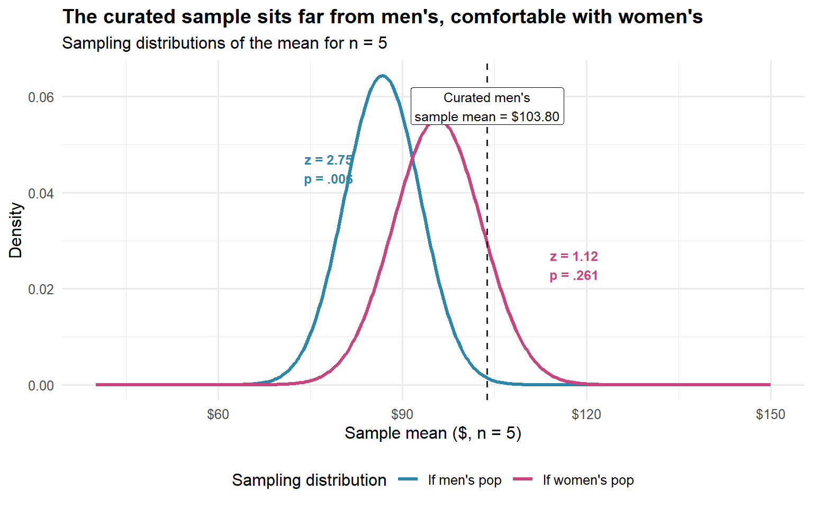
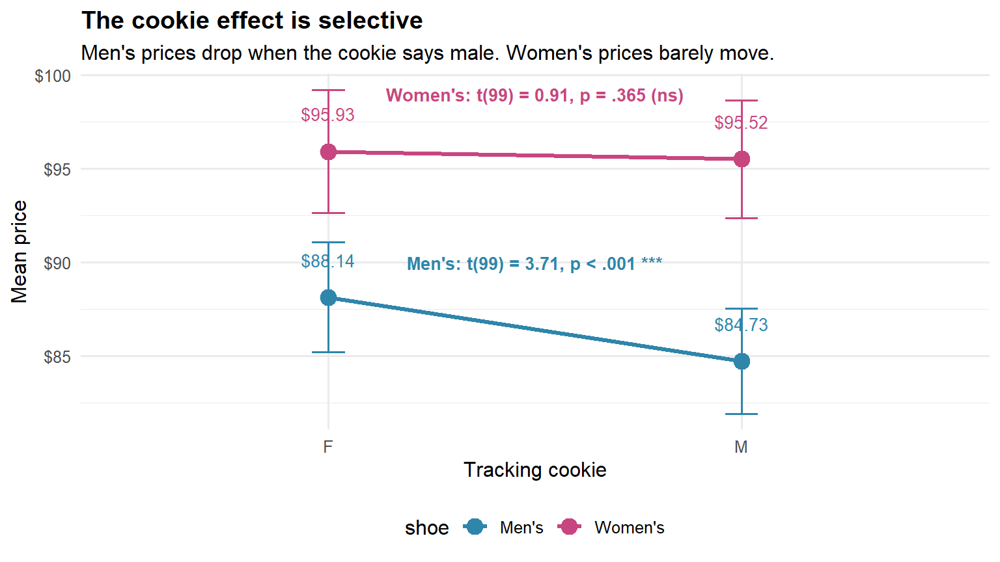
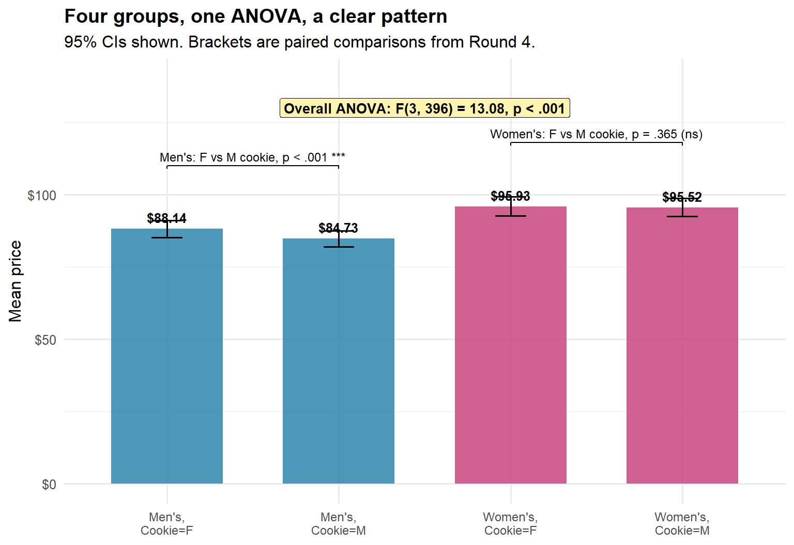

How a tracking cookie might be picking your wallet
Author
Ben Graul
Published
June 4, 2026
The Setup
You’re shopping for shoes online. The site has decided you’re female. You start to wonder whether your friend on his own laptop sees the same prices. That is the Shoe Price Gouging Hypothesis in plain English: the store reads your tracking cookie and quietly nudges prices around based on who it thinks you are.
We’re going to investigate using exactly what we covered in class: independent-samples t-tests, one-sample z-tests, paired t-tests, and one-way ANOVA. Plots throughout, so you can see what the numbers are doing.
A heads-up about the figures: every plot shows 95% confidence intervals on the means. Bring questions about what those intervals actually mean to office hours. The short version for now: wider interval, less certainty about where the true mean sits.
The Data
We collected prices under two conditions. First with the cookie identifying us as female, then again after clearing cookies and letting the site assume male.
Code
library(tidyverse)library(ggsignif)# Population parameters from the full inventorymu_men <-86.74sigma_men <-13.86mu_women <-95.70sigma_women <-16.13shoe_data <-tribble(~shoe, ~cookie, ~size, ~mean, ~sd, ~n,"Men's", "F", "Small", 103.80, 10.59, 5,"Men's", "F", "Large", 88.14, 14.75, 100,"Men's", "M", "Small", 79.37, 8.28, 5,"Men's", "M", "Large", 84.73, 14.13, 100,"Women's", "F", "Small", 102.85, 29.80, 5,"Women's", "F", "Large", 95.93, 16.52, 100,"Women's", "M", "Small", 62.32, 1.58, 5,"Women's", "M", "Large", 95.52, 15.80, 100) |>mutate(se = sd /sqrt(n),ci_lo = mean -qt(0.975, n -1) * se,ci_hi = mean +qt(0.975, n -1) * se )shoe_data
# A tibble: 8 × 9
shoe cookie size mean sd n se ci_lo ci_hi
<chr> <chr> <chr> <dbl> <dbl> <dbl> <dbl> <dbl> <dbl>
1 Men's F Small 104. 10.6 5 4.74 90.7 117.
2 Men's F Large 88.1 14.8 100 1.48 85.2 91.1
3 Men's M Small 79.4 8.28 5 3.70 69.1 89.7
4 Men's M Large 84.7 14.1 100 1.41 81.9 87.5
5 Women's F Small 103. 29.8 5 13.3 65.8 140.
6 Women's F Large 95.9 16.5 100 1.65 92.7 99.2
7 Women's M Small 62.3 1.58 5 0.707 60.4 64.3
8 Women's M Large 95.5 15.8 100 1.58 92.4 98.7
Quick read on the populations: men’s shoes really do average about $87, women’s shoes really do average about $96, and that gap of roughly $9 is the truth we’re trying to recover from samples.
Round 1: Independent-Samples t-Tests (Cookie = F)
Test 1: Five Shoes Each
We grabbed five men’s shoes and five women’s shoes. Equal variances assumed, since that’s what we covered.
The bars are similar heights in both panels. What changes is the width of the confidence intervals. Five shoes give you huge intervals that overlap massively. A hundred shoes give you tight intervals that clearly separate. The data didn’t change. Our ability to see the data did.
Round 2: One-Sample z-Tests
We have the population standard deviations, so a z-test is appropriate. We’re going to ask three questions about the curated samples we got served.
Code
one_sample_z <-function(M, mu, sigma, n) { se <- sigma /sqrt(n) z <- (M - mu) / se p <-2* (1-pnorm(abs(z)))tibble(z = z, p = p, se = se)}
Test 3: Is the Curated Men’s Sample Weird Compared to All Men’s Shoes?
Code
z_men_vs_men <-one_sample_z(M =103.80, mu = mu_men,sigma = sigma_men, n =5)z_men_vs_men
# A tibble: 1 × 3
z p se
<dbl> <dbl> <dbl>
1 2.75 0.00592 6.20
z = 2.75, p = .006. So the five “men’s shoes” the algorithm picked for the female-cookie shopper aren’t a normal slice of the men’s inventory. They’re significantly more expensive than the average men’s shoe.
Test 4: Does That Same Curated Sample Look Like Women’s Shoes?
Code
z_men_vs_women <-one_sample_z(M =103.80, mu = mu_women,sigma = sigma_women, n =5)z_men_vs_women
# A tibble: 1 × 3
z p se
<dbl> <dbl> <dbl>
1 1.12 0.261 7.21
z = 1.12, p = .261. The “men’s” shoes shown to a female-cookie shopper are priced indistinguishably from the women’s population. The algorithm isn’t picking random men’s shoes. It’s picking men’s shoes that cost what women’s shoes cost.
Test 5: Sanity Check on the Large Women’s Sample
Code
z_women_check <-one_sample_z(M =95.93, mu = mu_women,sigma = sigma_women, n =100)z_women_check
# A tibble: 1 × 3
z p se
<dbl> <dbl> <dbl>
1 0.143 0.887 1.61
z = 0.14, p = .886. Sanity check passed. When we sample broadly, we recover the population. The bias lives in the small, curated picks.
Visualizing Where the Curated Sample Falls
Code
x_grid <-seq(40, 150, length.out =400)densities <-bind_rows(tibble(price = x_grid,density =dnorm(x_grid, mu_men, sigma_men),population ="Men's population"),tibble(price = x_grid,density =dnorm(x_grid, mu_women, sigma_women),population ="Women's population"))# Distribution of the SAMPLE MEAN under each null hypothesissample_mean_curves <-bind_rows(tibble(price = x_grid,density =dnorm(x_grid, mu_men, sigma_men/sqrt(5)),hypothesis ="If men's pop"),tibble(price = x_grid,density =dnorm(x_grid, mu_women, sigma_women/sqrt(5)),hypothesis ="If women's pop"))ggplot(sample_mean_curves, aes(x = price, y = density, color = hypothesis)) +geom_line(linewidth =1.1) +geom_vline(xintercept =103.80, linetype ="dashed",color ="#222222", linewidth =0.7) +annotate("label", x =103.80, y =0.058,label ="Curated men's\nsample mean = $103.80",hjust =0.5, size =3.3, fill ="white") +annotate("text", x =78, y =0.045,label ="z = 2.75\np = .006",color ="#2E86AB", size =3.3, fontface ="bold") +annotate("text", x =118, y =0.025,label ="z = 1.12\np = .261",color ="#C8467F", size =3.3, fontface ="bold") +scale_color_manual(values =c("If men's pop"="#2E86AB","If women's pop"="#C8467F"),name ="Sampling distribution") +scale_x_continuous(labels = scales::dollar_format()) +labs(x ="Sample mean ($, n = 5)", y ="Density",title ="The curated sample sits far from men's, comfortable with women's",subtitle ="Sampling distributions of the mean for n = 5" ) +theme_minimal(base_size =12) +theme(legend.position ="bottom",plot.title =element_text(face ="bold"))

The dashed line marks the curated sample mean of $103.80. Look how far it sits in the right tail of the men’s sampling distribution, and how comfortably it sits inside the women’s sampling distribution. Visually, the z-tests are just reading off where that line falls.
Round 3: The Plot Twist (Cookie = M)
We cleared cookies, browsed a few hardware sites, and came back. Now the algorithm thinks we’re male. We refreshed the same shoes.
# A tibble: 4 × 5
shoe size `Cookie = F` `Cookie = M` `Difference (F - M)`
<chr> <chr> <dbl> <dbl> <dbl>
1 Men's Small 104. 79.4 24.4
2 Men's Large 88.1 84.7 3.41
3 Women's Small 103. 62.3 40.5
4 Women's Large 95.9 95.5 0.410
Female-cookie prices are higher across the board, and the gap is huge for the small curated samples. The right test for this is paired, since each cookie=F price has a matched cookie=M price for the same physical shoe.
Round 4: Paired t-Test
For the paired test, we use the differences directly. Across the 100 men’s shoes, the average price drop after switching to a male cookie was $3.41, with a standard deviation of differences of $9.20. For the women’s shoes, the average drop was $0.41 with SD of differences $4.51.
Code
paired_t <-function(mean_diff, sd_diff, n) { se <- sd_diff /sqrt(n) t_stat <- mean_diff / se df <- n -1 p <-2* (1-pt(abs(t_stat), df))tibble(mean_diff = mean_diff, sd_diff = sd_diff, n = n,t = t_stat, df = df, p = p)}paired_results <-bind_rows(paired_t(mean_diff =3.41, sd_diff =9.20, n =100) |>mutate(comparison ="Men's shoes (F vs M cookie)"),paired_t(mean_diff =0.41, sd_diff =4.51, n =100) |>mutate(comparison ="Women's shoes (F vs M cookie)")) |>select(comparison, everything())paired_results
# A tibble: 2 × 7
comparison mean_diff sd_diff n t df p
<chr> <dbl> <dbl> <dbl> <dbl> <dbl> <dbl>
1 Men's shoes (F vs M cookie) 3.41 9.2 100 3.71 99 0.000346
2 Women's shoes (F vs M cookie) 0.41 4.51 100 0.909 99 0.366
For the men’s shoes, t(99) = 3.71, p < .001. For the women’s shoes, t(99) = 0.91, p = .365. The cookie effect is real for men’s shoes and absent for women’s shoes. The store appears to be charging female-coded shoppers more specifically when they shop in the men’s section.
Code
paired_plot_data <- shoe_data |>filter(size =="Large") |>select(shoe, cookie, mean, ci_lo, ci_hi)ggplot(paired_plot_data, aes(x = cookie, y = mean, group = shoe, color = shoe)) +geom_line(linewidth =1.2) +geom_errorbar(aes(ymin = ci_lo, ymax = ci_hi), width =0.08, linewidth =0.7) +geom_point(size =4) +geom_text(aes(label = scales::dollar(mean, accuracy =0.01)),nudge_y =2, size =3.5, show.legend =FALSE) +annotate("text", x =1.5, y =90,label ="Men's: t(99) = 3.71, p < .001 ***",size =3.5, color ="#2E86AB", fontface ="bold") +annotate("text", x =1.5, y =99,label ="Women's: t(99) = 0.91, p = .365 (ns)",size =3.5, color ="#C8467F", fontface ="bold") +scale_color_manual(values =c("Men's"="#2E86AB", "Women's"="#C8467F")) +scale_y_continuous(labels = scales::dollar_format()) +labs(x ="Tracking cookie", y ="Mean price",title ="The cookie effect is selective",subtitle ="Men's prices drop when the cookie says male. Women's prices barely move." ) +theme_minimal(base_size =12) +theme(legend.position ="bottom",plot.title =element_text(face ="bold"))

The men’s line has a visible slope. The women’s line is nearly flat. The tracking cookie is changing prices in a targeted way.
Round 5: One-Way ANOVA
We have four groups: each combination of shoe gender and cookie status. A one-way ANOVA treats them as four conditions and asks whether at least one mean differs from the others.
# A tibble: 3 × 6
Source SS df MS F p
<chr> <dbl> <dbl> <dbl> <dbl> <chr>
1 Between groups 9220. 3 3073. 13.1 "3.67e-08"
2 Within groups 93037. 396 235. NA ""
3 Total 102257. 399 NA NA ""
F(3, 396) = 13.08, p < .001. At least one of the four conditions has a different mean than the others. The ANOVA on its own won’t tell us which pairs differ. We can see the pattern in the means though.
Code
anova_plot_data <- shoe_data |>filter(size =="Large") |>mutate(group =paste0(shoe, ",\nCookie=", cookie),group =factor(group, levels =c("Men's,\nCookie=F","Men's,\nCookie=M","Women's,\nCookie=F","Women's,\nCookie=M")))ggplot(anova_plot_data, aes(x = group, y = mean, fill = shoe)) +geom_col(width =0.65, alpha =0.85) +geom_errorbar(aes(ymin = ci_lo, ymax = ci_hi),width =0.18, linewidth =0.7) +geom_text(aes(label = scales::dollar(mean, accuracy =0.01)),vjust =-0.6, size =3.4, fontface ="bold") +geom_signif(annotations ="Men's: F vs M cookie, p < .001 ***",xmin ="Men's,\nCookie=F", xmax ="Men's,\nCookie=M",y_position =110, tip_length =0.02, textsize =3.2 ) +geom_signif(annotations ="Women's: F vs M cookie, p = .365 (ns)",xmin ="Women's,\nCookie=F", xmax ="Women's,\nCookie=M",y_position =118, tip_length =0.02, textsize =3.2 ) +annotate("label", x =2.5, y =130,label ="Overall ANOVA: F(3, 396) = 13.08, p < .001",fill ="#FFF3B0", size =3.6, fontface ="bold") +scale_fill_manual(values =c("Men's"="#2E86AB", "Women's"="#C8467F")) +scale_y_continuous(labels = scales::dollar_format(),limits =c(0, 140)) +labs(x =NULL, y ="Mean price",title ="Four groups, one ANOVA, a clear pattern",subtitle ="95% CIs shown. Brackets are paired comparisons from Round 4." ) +theme_minimal(base_size =12) +theme(legend.position ="none",plot.title =element_text(face ="bold"),axis.text.x =element_text(size =9))

Two stories show up in the bars. Women’s shoes are taller than men’s shoes regardless of cookie. Within men’s shoes, the female-cookie bar is taller than the male-cookie bar. Within women’s shoes, the cookie barely matters. That’s the pattern the ANOVA detected.
So, Is the Store Gouging?
Pulling everything together:
The large-sample independent t-test showed women’s shoes really do cost more than men’s shoes, by about $8.
The z-tests showed the curated small sample of men’s shoes shown to a female-cookie shopper was priced up in women’s-shoe territory. The algorithm was cherry-picking expensive men’s shoes for that audience.
The paired t-test showed that on the same men’s shoes, female-cookie shoppers pay about $3.41 more than male-cookie shoppers. For women’s shoes, the cookie does nothing.
The one-way ANOVA confirmed the four shoe-by-cookie conditions aren’t drawn from the same distribution.
The hypothesis isn’t proven beyond doubt. A real audit would need a controlled experiment with many more shoes, randomized browsing, and a few different IP addresses. The evidence we have is consistent and points one direction though. The cookie matters, and sample size matters even more. With five shoes, none of this would have been visible.
TipThe Big Lesson
A small biased sample can perfectly hide a large biased system. Always ask how much data a conclusion came from.
NoteFor the Review Session
Bring questions about confidence intervals. Every plot in this document shows them, and we’ll spend time talking about what a 95% CI does and does not say.